Tutorials
The Big Picture
- Why RCloud?
Increase Insights on Big Data Analyses through Collaboration
Build Confidence with Reproducible Results
Engage Users with Convenient Web-based Access
Access Big Data Processing Tools and Javascript Libraries using Built-in Features
Insure Privacy with OCAP Implementation and Notebook Encryption
Transform Knowledge into Assets with Built-in Version Control
Minimize Development to Deployment Effort through Notebook Sharing
Access Benefits of using Open Source Software
- Public Instance versus Local Installation
- OS X 10.11 (El Capitan)
- R 3.3.1
- XQuartz 2.7.9
- Java 1.8.0
- Anonymous User versus Data Scientist (Logging In) Access
- Press the "Log In" button on the Try It page or type 'http://rcloud.social/login.R' in your browser.

- If you are not already logged into your GitHub account, you will be redirected to GitHub where you can login (Github Sign in). 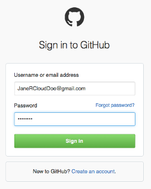 ...or you may register for an account if you don't already have one (Github Sign up). 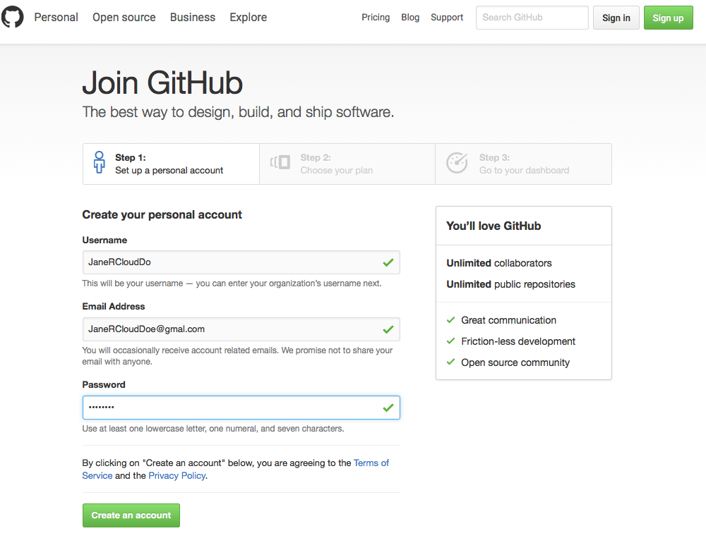 ...if this is a new GitHub account, GitHub requires that you verify your email address. 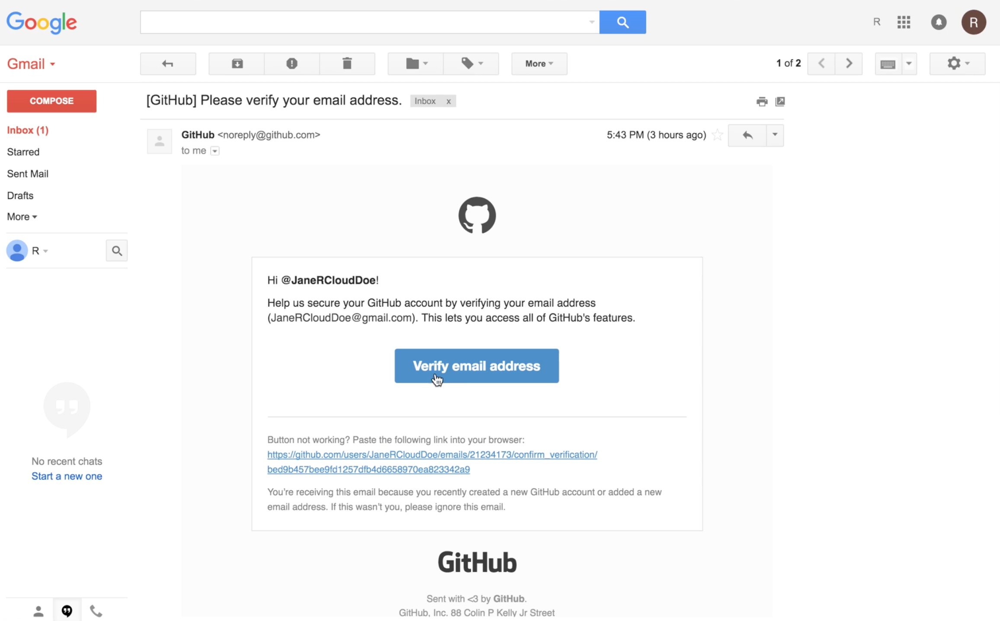
- After signing into your Github account, or registering for one as the case may be, the next step is to authorize RCloud to create gists in your Github account by pressing the 'Authorize application' button.
Note: For new GitHub accounts, you will need to navigate back to the 'Log In' page to get to the GitHub 'Authorize application' page, or you can find it in your GitHub profile settings.

- Once you have authorized the RCloud application, you should be automatically redirected back to the RCloud editing environment where you may begin creating and editing notebooks.
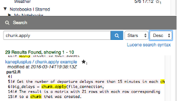RCloud enables Data Scientists to find value in data by sharing ideas and techniques with each other and results with any user in the community. RCloud employs notebooks composed of cells where topics may easily be broken up into concepts and where the relationship between the concepts can be easily understood.
In this environment, data scientist teams benefit from easier sharing of scripts and data feeds, experiments, annotations and automated recommendations which are well beyond what traditional individual or locally based development environments provide. Since notebooks are saved and searchable, rather than spending time "recreating the wheel", RCloud Data Scientists may reuse notebooks or parts of notebooks for similar projects.
Notebooks are project packages which contain all the components and dependencies of an analysis, including code, data, comments and other technical documentation, charts and deployment capabilities. This means results may be be verified and reproduced by anyone with access to the notebook.
As opposed to analysis which are stored locally, web-based content allows Data Scientists to collaborate over the Internet without concern for the location or syncing of system parameters, code and data. For example, the public instance of RCloud includes all CRAN packages. Local development environment parameters no longer create hurdles for viewing and running analyses since RCloud is platform independent and user access and controls remain constant which promotes user confidence and engagement.
RCloud supports all R packages including iotools for processing large data files and SparkR - an R frontend for Apache Spark.
An RCloud session runs on both client and server, so it is possible for R functions on the server to call JavaScript functions on the client, and vice versa. This means rich web-based content through easy integration of custom Javascript user interface (UI) and Javascript libraries such as JQuery and D3.
RCloud supports efficient, secure, client/server connections via the FastRWeb package and an adopted discipline known as the Object-Capabilities (ocap). This means that web browsers never directly instruct the RCloud backend to execute arbitrary code which prevents unauthenticated clients from making unauthorized calls to the RCloud runtime environment; read more about ocap on our Documentation introduction page or see the Wikipedia article. RCloud also maintains an automatic git based trail of code modifications which document the development history of an RCloud based project and RCloud notebooks may be encrypted for added security. In the notebook product space, authenticated client-server channeling and notebook encryption are unique to RCloud.
Code, widget, dashboard and analysis libraries are an ancillary benefit that comes with the creation of every RCloud notebook (on the public instance or in private clouds).
These "knowledge assets" may used on similar projects or to train new employees, for example. RCloud notebooks are searchable and forkable (sharable), so anyone with access to the notebooks may view and reuse a notebook and its content or various parts.
 Standard analytic workflows often involve performing a data science experiment using one set of tools and deploying the results using other tools.
Standard analytic workflows often involve performing a data science experiment using one set of tools and deploying the results using other tools.
Rather than stitching pipelines together and/or dealing with inconsistences between development and production environments, every RCloud notebook is named by a URL so analyses may easily be transformed from code and technical documenation to markdown annotated notebooks or rich web-based dashboards.
RCloud is an ideal environment for research and data analysis departments who commonly use R and/or Python to share, publish and archive their code and data. RCloud is roughly the same in terms of compute efficiency as in memory Business Intelligence (BI) tools like Tableau and Qlikview, but unlike these systems, you can add users to RCloud without licensing concerns.
Open source software also means access free online help and user training through forums like Stackoverflow.
| System | Collaboration | Built-in Security | No-cost User Scalibility | Versioning / Forking | Dashboards | Multi-language Support | Integrated Reports | Integrated Analysis |
|---|---|---|---|---|---|---|---|---|
| RCloud | X | X | X | X | X | X | X | X |
| RStudio | X | X | X | |||||
| JSFiddle | X | X | X | |||||
| bl.ocks | X | X | X | X | ||||
| RStudio Shiny | X | X | X | |||||
| Jupyter | X | X | X | X | ||||
| Tableau | X | X | X | X |
Public Instance
The public RCloud instance is the perfect place to test drive RCloud. Anyone with a GitHub account can have full user access to this instance. If you don't already have a GitHub account you can create one at the GitHub login page; see the next section Data Scientist Access (or Logging in) for details.
Local Installation
A local instance has the advantage of granting you complete control of your notebooks and data. Local instances also afford the opportunity to evaluate and experiment with the RCloud infrastructure. Windows is not supported at this time, but the following describes the requirements for the OSX download:
Requirements:
Local Enterprise Installation
Complete detailed instructions for installing a local enterprise RCloud instance may be found on GitHub Setting up (Installing) RCloud.
Both the public instance of RCloud and any local installation come with two methods for accessing notebooks: as an Anonymous User or as a Data Scientist.
Anonymous Users may view and interact with RCloud notebooks without having an RCloud account. This is done by navigating to the RCloud notebook web page using a hyperlink. The purpose of Anonymous User access is to allow Data Scientists to share their completed work as a web page (hyperlink) with non-developers and/or users who do not have an RCloud account.
To find out how a Data Scientist may share their work through hyperlinks, please refer the the Sharing Notebooks tutorial.
Data Scientist Access
An RCloud Data Scientist is someone with an RCloud account who can create, edit, fork (copy) and share notebooks. Since RCloud provides automatic version control by storing notebooks as Github gists, creating an RCloud account requires that you have a Github account. If you already have a GitHub account, you may skip to Step 3.
This information may also be viewed in our video tutorial 'Anonymous User versus Data Scientist (Logging In) Access'.
Getting Started
- Introduction to the RCloud Environment
- Creating, Forking (Copying) and Saving Notebooks
- Using the '+' key at the top of the left windowpane, or 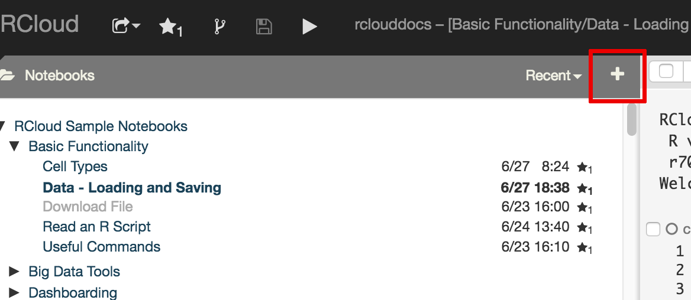
- Fork (copy) an existing notebook using the fork icon in the navigation bar. 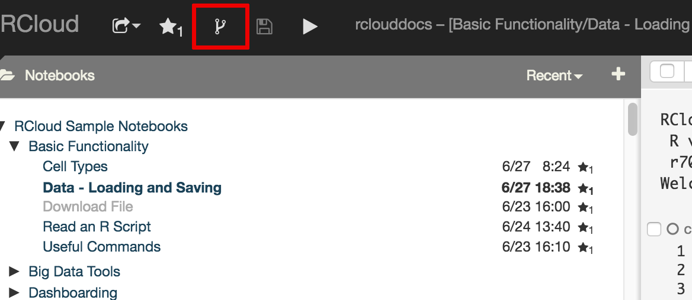
- Save notebooks by using the save icon in the navigation bar or by running the notebook. 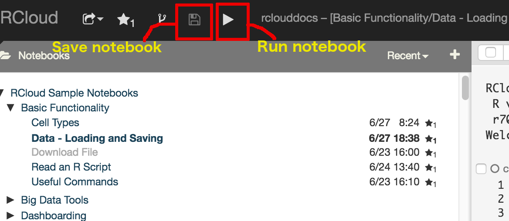
- Markdown and RMarkdown
- Data - Loading and Saving
- File upload to Data Scientist home directory.
Files may be uploaded to a User's home directory by using the GUI interface found in the right windowshade panel.
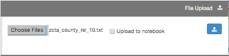Note: In this example, the 'Upload to notebook' box is not ticked. Since the data is now located in your home directory, you would access the path to the data using the following RCloud API 'rcloud.home()':
# Use RCloud API to read data # Data source: http://www2.census.gov/geo/docs/maps-data/data/rel/zcta_county_rel_10.txt' fn1 <- read.csv(rcloud.home('zcta_county_rel_10.txt'), sep=',', colClasses="character") summary(fn1) - File upload to RCloud Notebook.
Files may be uploaded directly to a specific RCloud Notebook by using the same process as in the first method, but also ticking the 'Upload to notebook' box in the GUI.
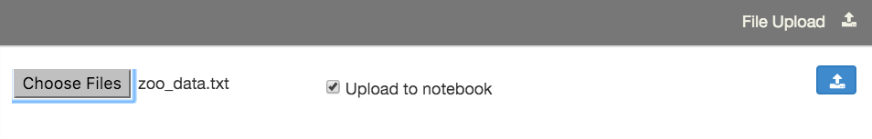Note: In this example, the 'Upload to notebook' box is ticked. Since the data is now an RCloud 'asset', you would access the path to the data using the following RCloud API 'rcloud.get.asset()':
# Use RCloud API to read data # Data source: http://archive.ics.uci.edu/ml/datasets/Zoo fn2 = rcloud.get.asset('zoo_data.txt', as.file=TRUE) t2 = read.table(fn2,sep=",",header=TRUE) - Drag and drop files to RCloud Assets.
Data may also be uploaded to RCloud by dragging and dropping files from your local machine to the Asset windowpane; the 'Drop File to Asset' GUI will automatically appear as you drag files.

Note: Using this method, file size is currently limited to 75KB on the public instance of RCloud.
Since the data is now and RCloud asset, it is referenced using the same method as in #2:
# Use RCloud API to read data # Data source: http://archive.ics.uci.edu/ml/datasets/Zoo fn3 = rcloud.get.asset('Wholesale_customers_data.csv', as.file=TRUE); t3 = read.table(fn3,sep=",",header=TRUE) - Manually create an RCloud Asset by typing in data.
RCloud Data Scientists may also manually enter data as an RCloud Asset. First click on the 'New Asset' tab in the Asset panel:
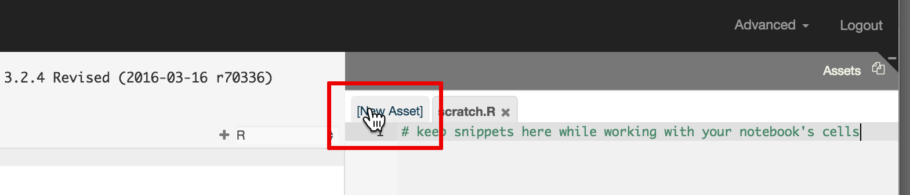Type a file name:
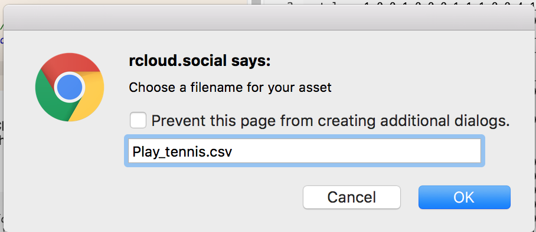Then either type data in the tab or use keyboard shortcut keys to copy and paste (e.g., Ctrl-A, Ctrl-C, Ctrl-V).

Since the data is now an RCloud asset, it is referenced using the same method as in #2:
# Use RCloud API to read data # Data source: http://www.cs.waikato.ac.nz/ml/weka/ fn4 = rcloud.get.asset('Play_tennis.csv', as.file=TRUE); t4 = read.table(fn4,sep=",",header=TRUE) - Output Data
Save data in your RCloud home directory by specifying the path:
oDir = rcloud.home() outFn = paste(oDir,"/outputTest.txt",sep="") # Write to file write.table(t4, outFn)
- For writing out to binary, the following code would be used instead:
# Create the output file; "wb" = write binary # f = file( outFn, "wb") # # Standard R write binary function # writeBin(t4,f); ### Some useful commands for data processing are: 1. file.remove(rcloud.upload.path("foo.txt")) 2. list.files(rcloud.home()). - Since Unix user directory may or may not coincide with the RCloud home directory depending on the deployment, rcloud.upload.path() may also be used. For example: 'list.files(rcloud.upload.path())'.
- Sharing Notebooks
- Notebook Protection, Privacy and Security
As an RCloud Data Scientist, you have the ability to create, fork, edit and share notebooks in the RCloud Integrated Development Environment (IDE). Only RCloud Data Scientists may creat 'view.html' links by clicking on the 'share' icon (square with arrow) in the navigation bar.
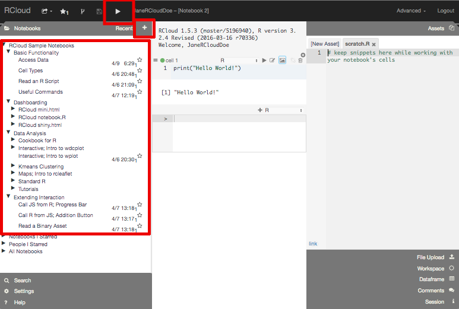RCloud Video Tutorial: Introduction to the RCloud Environment:
To create an RCloud notebook, you must be logged in as an RCloud Data Scientist. Once you are logged in, you may create a notebook using two methods:
For example, to get started fork an existing notebook (you must be logged in to access this notebook):
This information may also be viewed in our video tutorial 'Creating Notebooks'.
RCloud supports Markdown and RMarkdown - select the desired markdown by changing the cell type in the RCloud editing environment:

There are several methods to access data in RCloud including the following:
There are several methods to save data in RCloud including the following:
This information may also be viewed in the RCloud Sample Notebook: 'Data - Loading and Saving'.
RCloud Data Scientists may obtain a hyperlink (URL) to a notebook they have created or a published notebook created by another Data Scientist by clicking on the downward arrow next to the share icon  in the navigation bar.
to obtain a popup menu:
in the navigation bar.
to obtain a popup menu:
This allows Data Scientists to select the kind of URL they would like to share with non-developers. The simplest form of sharing is using RCloud notebook UI "view.html"; make the selection using the popup menu and then right click on the share icon to copy the notebook hyperlink. Alternatively, after selecting "view.html" with the share icon dropdown, click the share icon to launch the "view.html" notebook in a new tab, then copy that URL to share with non-RCloud Data Scientists.
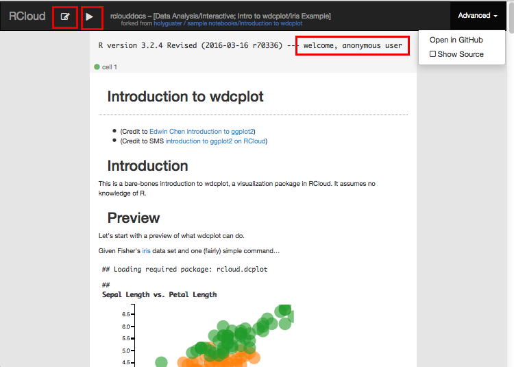Note: This only works if the notebook has also been published.
By default, users who wish to view notebooks must be logged into RCloud. However, if the "Publish Notebook" box is checked, any user who has network access to the notebook's URL will be able to view the notebook.
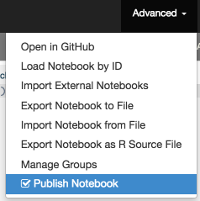Make a notebook protected (private) by clicking on the "eye" icon next to the notebook name in the left windowpane:
Protected notebooks are readable only by the owner and (optionally) a select group of users and will not show up in search results (although previously unprotected versions might).
Use the second tab of the protection dialog to create/rename groups and/or assign other users as administrators/members of groups you administrate. Alternatively, you can select Manage Groups from the Advanced menu item in the navigation bar — note that the Notebook tab will be grayed out in that case, as Manage Groups is not notebook specific.
Extending Interaction
- RCloud shiny.html - Using Shiny on RCloud
- Create a new blank RCloud notebook by clicking on the '+' button in the left windowshade panel.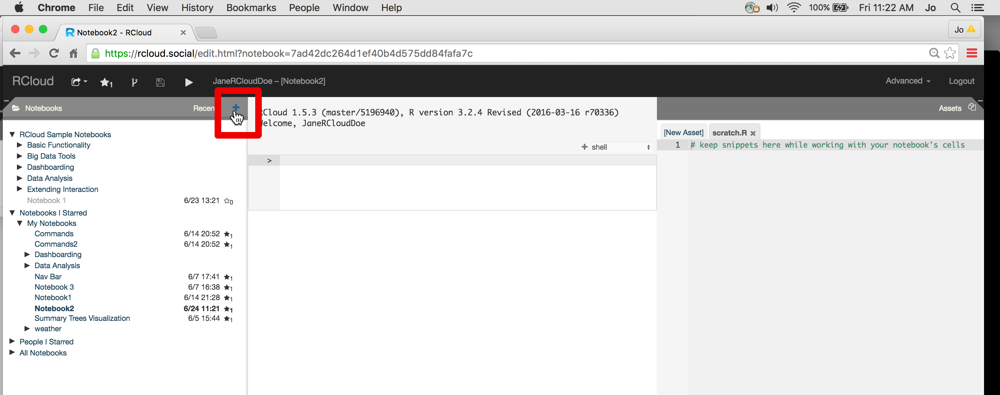
- Put the notebook in the Shiny share mode by clicking on the downward arrow in the 'share' icon and selecting 'shiny.html'.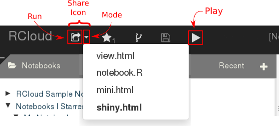
- Enter your Shiny sever and user interface code. Here is a basic example:
library(rcloud.shiny) library(shiny) # Put code here that will run once when the app is loaded df = iris # This is your Shiny User Interface (UI) layout ui = fluidPage( titlePanel("My Shiny RCloud Example"), helpText(a("View Source in RCloud UI", target="_blank", href=paste0("/edit.html?notebook=", rcloud.session.notebook.id()))), verticalLayout( sidebarPanel( selectInput("src0","Sepal",c("Length","Width")), selectInput("src1","Petal",c("Length","Width")), hr(), helpText(paste("This data set has",nrow(df),"rows")) ), mainPanel( plotOutput("thePlot") ) ) ) # This is the standard Shiny server function server = function(input,output) { output$thePlot = renderPlot({ x = df[[paste0("Petal.",input$src0)]] y = df[[paste0("Sepal.",input$src1)]] plot(x,y,xlab=input$src0,ylab=input$src1) }) } # Start the Shiny app in your browser. rcloud.shinyApp(ui=ui,server=server) - Notice that the Shiny server and UI functions are written exactly as they would in a stand-alone Shiny app except they are not wrapped inside shinyUI() and shinyServer() functions. Instead they are simply passed to the rcloud.shinyApp() API.
- To run this app first click the play button. Any R syntax errors will be shown in the notebook cell output window. If no errors occur then click the run arrow on the 'share' icon in the editor toolbar. A new tab will open in your browser with the executing Shiny app. Any runtime errors will be shown in the browser just as they would in a stand-alone Shiny app.
- Shiny apps may be shared publicaly or privately just like any other RCloud notebook. Read the 'Sharing RCloud Notebooks' tutorial for the details.
- RCloud mini.html
- RCloud notebook.R
- Built-in Javascript Integration
- Other Javascript Integration; User defined functions and D3.org examples
This tutorial describes how to write and deploy an R Shiny application on RCloud.
Hosting Shiny applications on RCloud allows you to enjoy the convenience of RCloud development and distribution with the elegant user interface features of Shiny.
This tutorial assumes you are familiar with the basics of Shiny application development. To learn more about constructing Shiny apps or for a refresher on the Shiny architecture visit the RStudio Shiny Tutorial page.
View sample Shiny notebooks on the public instance, by logging in as a Data Scientist and navigating to the 'RCloud Sample Notebooks/Dashboarding/RCloud shiny.html' directory or click on the image below to view a Word Cloud example.